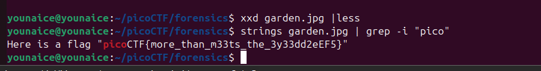

Challenge Description
This garden contains more than it seems.
Writeup Steps
-
Check the file given, is a picture of a garden.
-
Check its file type and metadata

Seems like there's something under this binary data
-
At first, I use xxd to inspect the hex dump, no result. Then, I use
stringsto get the "pico", and yea it's hiding between the data.
Flag
picoCTF{more_than_m33ts_the_3y33dd2eEF5}